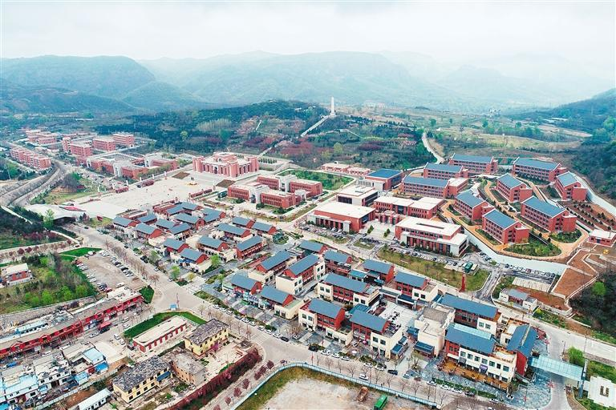
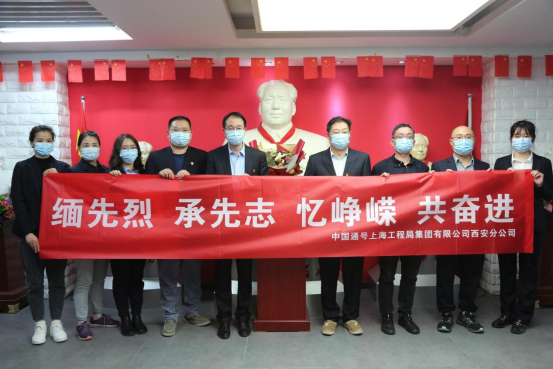
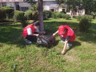

全国资讯

红色基因助力陕西革命老区高质量发展
红色基因助力陕西革命老区高质量发展 清晨的阳光，洒在宝塔山上。山顶飘扬着的鲜红党旗上，金色的镰刀锤头格外醒目。很多来自全国各地的党员在此重温入党誓词。“为共产主义奋斗终身，随时准备为党和人民牺牲一切，永不叛党。”铿锵誓言，久久萦绕在黄土高原的苍松翠柏间。毫无疑问，陕西是一块红色土地。杨家岭、枣园、延河、照金……这些地理坐标不仅铭记着中国共产党领导中国革命的光辉历程，更积淀着中华民族宝贵的精神财富。“红色题材”游戏今年首批获版号，更多厂商在入局
如何创新表达方式，走进年轻人群，让红色精神绽放光芒？近年可能会有新的打开方式。近日，中宣部出版局相关负责人表示，出版局将重点实施“网络游戏正能量引领计划”，打造一批传承中华优秀传统文化、革命文化、社会主义先进文化，弘扬社会主义核心价值观，深化中国特色社会主义和中国梦宣传教育等方面的出版精品，清明小长假引爆红色旅游
在西安烈士陵园纪念碑前，来自省内外的游客三三两两自发瞻仰烈士墓，学习、了解革命历史，接受爱国主义教育。
《寻找英雄的身影》来西安市曲江红色记忆博物馆取景拍摄
近期，正是“红入桃花嫩，青归柳叶新”的大好时节。洛南县保安镇万物复苏中迎来了一派浓浓春光，桃红柳绿次第在春风中绽放，森林防灭火和疫情防控工作更是进入关键时期。为进一步推进全镇森林防灭火工作，全力做好新冠肺炎疫情防控，该镇组织新时代文明实践所、各村（社区）新时代文明实践站积极发挥志愿服务活动，开展志愿服务宣传活动，增强群众对当前疫情防控和森林防火形势的认识。
中国通号上海工程局集团西安分公司开展清明节缅怀先烈主题党日活动
中国通号上海工程局集团西安分公司开展清明节缅怀先烈主题党日活动辽宁资讯
